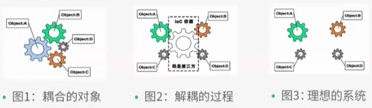
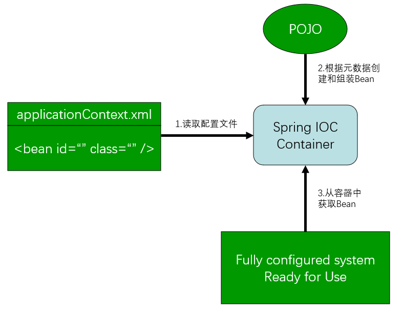
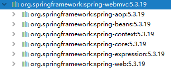
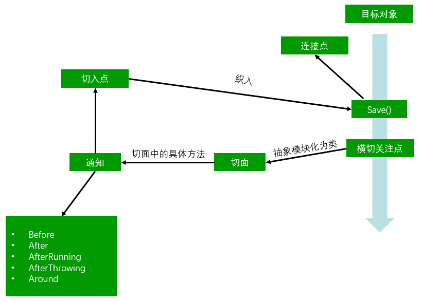

简介 官网：https://docs.spring.io/spring-framework/docs/current/reference/html/
下载地址：https://repo.spring.io/ui/native/release/org/springframework/spring/
github：https://github.com/spring-projects/spring-framework
优点：
Spring是一个开源、免费、轻量级、非入侵式（即引用后程序依旧能正常运行）的框架；
控制反转（IOC）、面向切面编程（AOP）；
支持事务处理、框架整合。
Maven依赖
<dependency > <groupId > org.springframework</groupId > <artifactId > spring-webmvc</artifactId > <version > 5.3.19</version > </dependency >
IOC 控制反转IOC（Inversion of Control），是一种设计思想，而 DI（依赖注入）是实现IOC的一种方法。没有IOC的程序中，使用面向对象编程时，对象的创建与对象间的依赖关系完全硬编码在程序中，对象的创建由程序自己控制。而控制反转后将对象的创建转移给第三方。即所谓控制反转就是：获得依赖对象的方式反转了。

Spring容器在初始化时先读取配置文件，根据配置文件或元数据创建与组织对象并存入容器中，程序使用时再从IOC容器中取出需要的对象。

采用 XML方式 配置Bean的时候，Bean的定义信息是和实现 分离 的，而采用 注解 的方式可以把两者合为一体，Bean的定义信息直接以注解的形式定义在实现类中，从而达到了零配置的目的。
控制反转是一种使用描述（XML或注解）并通过第三方去生产获取特定对象的方式。在Spring中实现控制反转的是 IOC容器，其实现方法是 依赖注入（DI，Dependency Injection）。
HelloSpring 实体类
@Data @AllArgsConstructor @NoArgsConstructor public class Hello { private String name; }
配置文件applicationContext.xml
<?xml version="1.0" encoding="UTF-8" ?> <beans xmlns ="http://www.springframework.org/schema/beans" xmlns:xsi ="http://www.w3.org/2001/XMLSchema-instance" xsi:schemaLocation ="http://www.springframework.org/schema/beans https://www.springframework.org/schema/beans/spring-beans.xsd" > <bean id ="hello" class ="com.pojo.Hello" > <property name ="name" value ="Spring" /> </bean > </beans >
测试
public class MyTest { public static void main (String[] args) { ApplicationContext context = new ClassPathXmlApplicationContext ("applicationContext.xml" ); Hello hello = (Hello) context.getBean("hello" ); System.out.println(hello.toString()); } }
这个过程就叫控制反转：
控制：谁来控制对象的创建，传统应用程序的对象是由程序本身控制创建的。使用Spring后，对象由Spring来创建。
反转：程序本身不创建对象，而变成被动的接收对象。
IOC是一种编程思想，由主动的编程变成被动的接收。所谓的IOC，即：对象由Spring来创建，管理，装配。
IOC创建对象方式 默认使用 无参构造方法 创建对象，当需要为属性赋值时需要有对应的 set方法。
使用 有参构造方法 来创建对象时，此时只能通过以下方式进行属性赋值，且 可以省略set方法。
实体类
@Data @AllArgsConstructor @NoArgsConstructor public class User { private String name; }
下标 赋值
<bean id ="user" class ="com.pojo.User" > <constructor-arg index ="0" value ="李四" /> </bean >
根据 类型 赋值，但类型相同时会出错，不建议使用
<bean id ="user" class ="com.pojo.User" > <constructor-arg type ="java.lang.String" value ="张三" /> </bean >
通过 参数名 来赋值
<bean id ="user" class ="com.pojo.User" > <constructor-arg name ="name" value ="王五" /> </bean >
在 配置文件加载 的时候，容器中管理的对象就已经 初始化 了。
依赖注入（DI） 依赖 : 指Bean对象的 创建 依赖于容器 。
注入 : 指Bean对象所依赖的 资源 , 例如属性，由容器来设置和装配 。
构造器注入 此时使用的是 有参构造方法，参考 IOC创建对象方式 的第二种。
Set方式注入【主要方式】 此时必须有 无参构造方法 以及 set方法。
Address类
@Data @AllArgsConstructor @NoArgsConstructor public class Address { private String address; }
Student类
@Data @AllArgsConstructor @NoArgsConstructor public class Student { private String name; private Address address; private String[] books; private List<String> hobbies; private Map<String,String> card; private Set<String> games; private String wife; private Properties info; }
applicationContext.xml
<beans xmlns ="http://www.springframework.org/schema/beans" xmlns:xsi ="http://www.w3.org/2001/XMLSchema-instance" xmlns:p ="http://www.springframework.org/schema/p" xsi:schemaLocation ="http://www.springframework.org/schema/beans https://www.springframework.org/schema/beans/spring-beans.xsd" > <bean id ="address" class ="com.pojo.Address" > <property name ="address" value ="xxx-xxx-xx" /> </bean > <bean id ="student" class ="com.pojo.Student" > <property name ="name" value ="张三" /> <property name ="address" ref ="address" /> <property name ="books" > <array > <value > 《红楼梦》</value > <value > 《西游记》</value > </array > </property > <property name ="hobbies" > <list > <value > 阅读</value > <value > 绘画</value > </list > </property > <property name ="card" > <map > <entry key ="001" value ="A" /> <entry key ="002" value ="B" /> </map > </property > <property name ="games" > <set > <value > 1</value > <value > 2</value > <value > 1</value > </set > </property > <property name ="wife" > <null /> </property > <property name ="info" > <props > <prop key ="学号" > 1910121029</prop > <prop key ="性别" > 男</prop > </props > </property > </bean > </beans >
P命名空间、C命名空间注入 p命名空间注入：对应于 set注入，依赖于 无参构造和set方法。
xmlns:p="http://www.springframework.org/schema/p" <bean id ="user" class ="com.pojo.User" p:name ="张三" p:age ="18" />
c命名空间注入：对应于 构造器注入，依赖于 有参构造。
xmlns:c="http://www.springframework.org/schema/c" <bean id ="user2" class ="com.pojo.User" c:name ="李四" c:age ="18" />
Bean属性的自动装配 自动装配 是Spring满足bean依赖的一种方式，Spring会在上下文中自动寻找，并自动给bean 装配属性。
在Spring中有三种装配的方式：
在xml中显式配置【传统方式】
在Java中显式配置【使用java方式，不需要xml配置文件】
隐式的自动装配bean【注解】
以下主要讲解第三种方式：
实体类
public class Cat { public void shout () { System.out.println("miao~" ); } } public class Dog { public void shout () { System.out.println("wang~" ); } } public class People { private Cat cat; private Dog dog; private String name; }
配置文件
<?xml version="1.0" encoding="UTF-8" ?> <beans xmlns ="http://www.springframework.org/schema/beans" xmlns:xsi ="http://www.w3.org/2001/XMLSchema-instance" xmlns:p ="http://www.springframework.org/schema/p" xsi:schemaLocation ="http://www.springframework.org/schema/beans https://www.springframework.org/schema/beans/spring-beans.xsd" > <bean id ="cat" class ="com.pojo.Cat" /> <bean id ="Dog" class ="com.pojo.Dog" /> <bean id ="people" class ="com.pojo.People" > <property name ="name" value ="张三" /> <property name ="cat" ref ="cat" /> <property name ="dog" ref ="Dog" /> </bean > </beans >
byName byName，按 名称 自动装配。修改bean配置，增加属性 autowire="byName"
<bean id ="people" class ="com.pojo.People" autowire ="byName" > <property name ="name" value ="张三" /> </bean >
规则：查找其类中所有的set方法名，例如setCat，获得将set去掉并且首字母小写的字符串，即cat。然后去spring容器中寻找是否有此字符串名称id的对象，如果有，就取出注入；如果没有，就报空指针异常。
byType byType，按 类型 自动装配。会自动在容器上下文中查找和自己属性 类型相同 的bean，使用时需要保证：同一类型 的对象，在spring容器中 唯一。如果不唯一，会报不唯一的异常，即：NoUniqueBeanDefinitionException
修改bean配置，增加属性 autowire="byType"
<bean id ="people" class ="com.pojo.People" autowire ="byType" > <property name ="name" value ="张三" /> </bean >
此时属性对应的bean就算 不提供id 也能装配成功，因为byType是根据类型来装配的，例如：<bean class="com.pojo.Cat"/>
使用注解实现属性的自动装配 jdk1.5后支持注解，Spring2.5后支持注解。
使用注解须知
导入约束：context约束
开启属性注解支持：<context:annotation-config/>
<?xml version="1.0" encoding="UTF-8" ?> <beans xmlns ="http://www.springframework.org/schema/beans" xmlns:xsi ="http://www.w3.org/2001/XMLSchema-instance" xmlns:context ="http://www.springframework.org/schema/context" xsi:schemaLocation ="http://www.springframework.org/schema/beans https://www.springframework.org/schema/beans/spring-beans.xsd http://www.springframework.org/schema/context https://www.springframework.org/schema/context/spring-context.xsd" > <context:annotation-config /> </beans >
@Autowired注解，直接在属性上使用，或是在set方法上使用。
public class People { @Autowired private Dog dog; }
此时它会依照byName或是byType方式进行自动装配，因此要么存在 id值与名字相同，要么 该类型的bean唯一，否则会报错。
<bean id ="dog1" class ="com.pojo.Dog" /> <bean id ="dog11" class ="com.pojo.Dog" />
存在所需id值的bean时又存在同类型的bean对象时 优先使用byName方式。
<bean id ="dog" class ="com.pojo.Dog" > <property name ="name" value ="小灰" /> </bean > <bean id ="dog11" class ="com.pojo.Dog" > <property name ="name" value ="小黑" /> </bean >
当既不存在与名字相同的id值，且该类型的bean又不唯一时，可以在属性上方加上 @Qualifier(value="xxx") 来指定一个bean，即可完成自动装配。
@Autowired @Qualifier(value = "dog11") private Dog dog;
使用@Autowired，即使 没有set方法 也能正常运行，前提是自动装配的属性在IOC（Spring）容器中存在且符合byName或byType。
如果显式定义了@Autowired的required的属性为false，说明这个对象可以为 null，否则不允许为空，即：@Autowired(required = false)
@Resource注解，直接在属性上使用，或是在set方法上使用。
public class People { @Resource private Cat cat; }
它也是依据byName或byType来实现的，因此要么存在id值与名字相同，要么该类型的bean唯一，否则会报错。当存在所需id值的bean时又存在同类型的bean对象时优先使用byName方式。这种注解也可以省略set方法。
<bean id ="dog" class ="com.pojo.Dog" > <property name ="name" value ="小灰" /> </bean > <bean id ="dog11" class ="com.pojo.Dog" > <property name ="name" value ="小黑" /> </bean >
当既不存在与名字相同的id值，且该类型的bean又不唯一时，可以通过 name 来指定bean。
@Resource(name = "dog1") private Dog dog;
<bean id ="dog1" class ="com.pojo.Dog" /> <bean id ="dog11" class ="com.pojo.Dog" />
Spring配置 alias标签 设置 别名，可以使用原名称或别名来获取这个对象
<alias name ="user" alias ="user2" />
bean标签的配置
id：bean的标识符，相当于对象名
class：bean对象所对应的全限定名：包名 + 类名
name：别名，可以同时取多个别名，可以用逗号、空格、分号分隔。
<bean id ="user" class ="com.pojo.User" name ="user2 u2,u3;u4" />
id是bean的标识符，唯一。如果没有配置id，name就是默认标识符。
如果 不配置id和name，可以根据 Context.getBean(类名.class) 获取对象。
import标签 import标签一般用于团队开发，它可以将多个配置文件导入 合并 为一个。使用的时候，直接使用总的配置文件即可。
<import resource ="beans1.xml" /> <import resource ="beans2.xml" />
若两个配置文件中存在 相同的bean，例如配置文件1中的bean与配置文件2中某一个bean的 id相同，则后导入的配置文件中的bean会 覆盖 之前导入的配置文件中的bean，同时它的别名为两者别名的 并集。
<bean id ="user" class ="com.pojo.User" name ="u1,u2,u3" > <property name ="name" value ="张三" /> </bean > <bean id ="user" class ="com.pojo.User" name ="u2,u3,u4" > <property name ="name" value ="王五" /> </bean > <import resource ="beans1.xml" /> <import resource ="beans2.xml" /> <bean id ="user" class ="com.pojo.User" name ="u1,u2,u3,u4" > <property name ="name" value ="王五" /> </bean >
Bean的作用域 参考文档：https://docs.spring.io/spring-framework/docs/current/reference/html/core.html#beans-factory-scopes
singleton（单例模式）：每次从容器中get到的都是同一个对象，Spring的默认机制，也可显式设置。
<bean id ="user" class ="com.pojo.User" c:name ="李四" c:age ="18" scope ="singleton" />
ApplicationContext context = new ClassPathXmlApplicationContext ("userbeans.xml" );User user = context.getBean("user" , User.class);User user2 = context.getBean("user" , User.class);System.out.println(user==user2);
prototype（原型模式）：每次从容器中get的时候，都会产生一个新对象。
<bean id ="user" class ="com.pojo.User" c:name ="李四" c:age ="18" scope ="prototype" />
ApplicationContext context = new ClassPathXmlApplicationContext ("userbeans.xml" );User user = context.getBean("user" , User.class);User user2 = context.getBean("user" , User.class);System.out.println(user.hashCode()); System.out.println(user2.hashCode()); System.out.println(user==user2);
其余的request、session、application、websocket，这些只能在web开发中使用。
使用注解开发 在Spring4之后，要使用注解开发，必须要保证导入了 aop 的包。

使用注解需要导入 context约束，增加注解的支持。
<?xml version="1.0" encoding="UTF-8" ?> <beans xmlns ="http://www.springframework.org/schema/beans" xmlns:xsi ="http://www.w3.org/2001/XMLSchema-instance" xmlns:context ="http://www.springframework.org/schema/context" xsi:schemaLocation ="http://www.springframework.org/schema/beans https://www.springframework.org/schema/beans/spring-beans.xsd http://www.springframework.org/schema/context https://www.springframework.org/schema/context/spring-context.xsd" > <context:annotation-config /> </beans >
bean的自动装配 使用 @Component 注解，放在类上，说明这个类被Spring管理了，等价于bean。
@Component public class User { public String name = "张三" ; }
ApplicationContext context = new ClassPathXmlApplicationContext ("applicationContext.xml" );User user = context.getBean("user" , User.class);System.out.println(user.name);
注意：使用@Component注解需要导入约束：<context:component-scan base-package="com.pojo"/>
属性的自动装配 除之前介绍的方法外，还可以使用 @Value 注解，实现属性的注入。可以放在属性上（此时可以 省略 set方法），也可以放在set方法上。
public class User { @Value("张三") public String name; }
@Component的衍生注解 在web开发中按照MVC三层架构分层，对应的注解为：
dao 【@Repository】
service 【@Service】
controller 【@Controller】
这三个注解以及@Component的功能都是一样的，都代表将某个类注册到Spring容器中，即装配bean。
作用域
singleton：默认的，Spring会采用单例模式创建这个对象。关闭工厂，所有的对象都会销毁。prototype：多例模式。关闭工厂，所有的对象不会销毁。
@Scope("singleton") public class User { ... }
注意：若要使用@Scope注解，此时的bean需要使用 @Component 注解来配置。若用xml来配置bean，@Scope无法生效。
小结 xml与注解
xml：更加万能，适用于任何场合，维护简单方便。
注解：维护相对复杂。
xml与注解配合使用：xml用来管理bean，注解只负责完成属性的注入。
注解与约束的对应关系
@Autowired和@Resource——<context:annotation-config/>
@Component——<context:component-scan base-package="com.pojo"/>
@Value——<context:component-scan base-package="com.pojo"/> 或 <context:annotation-config/>
@Scope——<context:component-scan base-package="com.pojo"/>
IOC小结 bean的创建方式：
无参构造
有参构造
@Compenent——需要导入扫描组件的约束
属性装配方式：
构造器——对应有参构造
set注入——对应无参构造和set方法
P、C命名空间——需要导入对应命名空间的约束
隐式装配：byName、byType、@Autowired、@Resource——后两个需要开启注解支持
@Value——要么导入扫描组件的约束、要么开启注解驱动
Java方式配置Spring 完全不使用Spring的xml配置，全权交给Java。
实体类
@Data @AllArgsConstructor @NoArgsConstructor public class User { @Value("张三") private String name; }
配置类
@Configuration public class MyConfig { @Bean @Scope("prototype") public User user () { return new User (); } }
测试
ApplicationContext context = new AnnotationConfigApplicationContext (MyConfig.class);User user = (User) context.getBean("user" );System.out.println(user);
存在多个配置类时，也可以通过 @Import 注解导入合并其他配置类，类似于配置文件中的 inculde 标签。
@Configuration @Import(MyConfig.class) public class MyConfig1 { ... }
代理模式 代理模式分为：静态代理 和 动态代理，其中AOP的底层机制就是动态代理。
静态代理 角色分析
抽象角色：一般会使用接口或者抽象类来解决。
真实角色：被代理的角色。
代理角色：代理真色角色，代理真实角色后，一般会做一些附属操作，例如收中介费。
客户：访问代理角色的人。
代码实现
抽象角色
public interface Rent { public void rent () ; }
真实角色
public class Host implements Rent { @Override public void rent () { System.out.println("房东有房子准备出租" ); } }
代理角色
public class Proxy implements Rent { private Host host; public Proxy (Host host) { this .host = host; } @Override public void rent () { host.rent(); contract(); } public void contract () { System.out.println("签租赁合同" ); } }
客户
public class Client { public static void main (String[] args) { Host host = new Host (); Proxy proxy = new Proxy (host); proxy.rent(); } }
分析：在这个过程中，客户直接接触的就是中介，就如同现实生活中的样子，客户看不到房东，但是通过中介代理租到了房东的房子，这就是所谓的代理模式。可以 在不改变原来的代码的情况下，实现了对原有功能的增强。
优点：
可以使真实角色的操作更加纯粹，不用去关注一些公共的业务。
公共业务交给代理角色，实现了业务的分工。
公共业务发生扩展的时候，方便集中管理。
缺点：一个真实角色就需要一个代理角色，代码量大。
动态代理 动态代理和静态代理的角色相同，即：抽象角色、真实角色、代理角色、客户。区别之处在于动态代理的 代理类（代理角色）是 动态生成 的，不是直接写好的。
动态代理分为：基于 接口 的动态代理、基于 类 的动态代理，实现方法有：
基于接口 —— JDK动态代理
基于类 —— cglib
java字节码实现 —— javasist
JDK动态代理的核心：Proxy【代理】、InvocationHandler【调用处理程序】
优点：
涵盖静态代理的优点。
一个动态代理类代理的是一个接口，一般就是对应的一类业务。因此一个动态代理类可以代理多个类，只需这些类实现了同一个接口。
抽象角色
public interface Rent { public void rent () ; }
真实角色
public class Host implements Rent { @Override public void rent () { System.out.println("房东有房子准备出租" ); } }
动态代理类（通用版）
import java.lang.reflect.InvocationHandler;import java.lang.reflect.Method;import java.lang.reflect.Proxy;public class ProxyInvocationHandler implements InvocationHandler { private Object target; public void setTarget (Object target) { this .target = target; } public Object getProxy () { return Proxy.newProxyInstance(this .getClass().getClassLoader(), target.getClass().getInterfaces(), this ); } @Override public Object invoke (Object proxy, Method method, Object[] args) throws Throwable { Object result = method.invoke(target, args); ... return result; } ... }
客户
public class Client { public static void main (String[] args) { Host host = new Host (); ProxyInvocationHandler pih = new ProxyInvocationHandler (); pih.setTarget(host); Rent proxy = (Rent) pih.getProxy(); proxy.rent(); } }
AOP AOP（Aspect Oriented Programming），面向切面编程。可在不影响原来业务类的情况下，实现动态的增强。
作用：提供声明式事务；允许用户自定义切面。
相关名词：
横切关注点：跨越应用程序多个模块的方法或功能，即与我们业务逻辑无关的，但是我们需要关注的部分，就是横切关注点，如日志、安全、缓存、事务等等。
切面（Aspect）：横切关注点被模块化的特殊对象，即它是一个类。
通知（Advice）：切面必须要完成的工作，即它是类中的一个方法。
目标（Target）：被通知对象。
代理（Proxy）：向目标对象应用通知之后创建的对象。
切入点（PointCut）：切面通知执行的“地点”的定义。
连接点（JointPoint）：与切入点匹配的执行点。

SpringAOP中，通过Advice定义横切逻辑，Spring中支持5种类型的Advice：
通知类型
连接点
实现接口
前置通知
方法前
org.springframework.aop.MethodBeforeAdvice
后置通知
方法后
org.springframework.aop.AfterReturningAdvice
环绕通知
方法前后
org.aopalliance.intercept.MethodInterceptor
异常抛出通知
方法抛出异常
org.springfarmework.aop.ThrowsAdvice
引介通知
类中增加新的方法属性
org.springframework.aop.IntroductionInterceptor
Spring实现AOP织入，需要先导入一个依赖，且有以下几种方式
<dependency > <groupId > org.aspectj</groupId > <artifactId > aspectjweaver</artifactId > <version > 1.9.9.1</version > </dependency >
方式一：使用Spring的API接口
接口
public interface UserService { public void add () ; public void delete () ; public void update () ; public void select () ; }
实现类
public class UserServiceImpl implements UserService { @Override public void add () { System.out.println("增加了一个用户" ); } @Override public void delete () { System.out.println("删除了一个用户" ); } @Override public void update () { System.out.println("修改了一个用户" ); } @Override public void select () { System.out.println("查询了一个用户" ); } }
前置通知
public class Log implements MethodBeforeAdvice { @Override public void before (Method method, Object[] args, Object target) throws Throwable { System.out.println(target.getClass().getName() + "的" + method.getName() + "被执行了" ); } }
后置通知
public class AfterLog implements AfterReturningAdvice { @Override public void afterReturning (Object returnValue, Method method, Object[] args, Object target) throws Throwable { System.out.println("执行了" + method.getName() + "方法，返回结果为" + returnValue); } }
Spring的XML配置
<?xml version="1.0" encoding="UTF-8" ?> <beans xmlns ="http://www.springframework.org/schema/beans" xmlns:xsi ="http://www.w3.org/2001/XMLSchema-instance" xmlns:aop ="http://www.springframework.org/schema/aop" xsi:schemaLocation ="http://www.springframework.org/schema/beans https://www.springframework.org/schema/beans/spring-beans.xsd http://www.springframework.org/schema/aop https://www.springframework.org/schema/aop/spring-aop.xsd" > <bean id ="userServiceImpl" class ="com.service.UserServiceImpl" /> <bean id ="log" class ="com.log.Log" /> <bean id ="afterLog" class ="com.log.AfterLog" /> <aop:config > <aop:pointcut id ="pointcut" expression ="execution(* com.service.UserServiceImpl.*(..))" /> <aop:advisor advice-ref ="log" pointcut-ref ="pointcut" /> <aop:advisor advice-ref ="afterLog" pointcut-ref ="pointcut" /> </aop:config > </beans >
切入点表达式：execution( [权限修饰符] 返回值类型 包名.类名.方法名(参数列表))
修饰符可以省略。返回值类型可以指定，也可以使用*，表示任意类型。
方法切入点：
* *(..)：所有包中所有类的所有方法
* login(..)
* login(String, String)
* login(String, ..)
* register(com.*.*.User)：参数为自定义对象时需要使用类的全类名
类切入点：
* *..UserServiceImpl.*(..)：所有包中的USerServiceImple类内部的所有方法
* *.UserServiceImpl.*(..)：一级包中的USerServiceImple类内部的所有方法
* *..UserServiceImpl.login(..)：所有包中的USerServiceImple类中的login方法
包切入点：
* com.baizhi..*.*(..)：com.baizhi包下及其子包中所有类中的所有方法
* com.baizhi.*.*(..)：com.baizhi包下所有类中的所有方法
* *..*.*(..)：所有包中所有类的所有方法
测试类
public class MyTest { public static void main (String[] args) { ApplicationContext context = new ClassPathXmlApplicationContext ("applicationContext.xml" ); UserService userServiceImpl = context.getBean("userServiceImpl" , UserService.class); userServiceImpl.add(); } }
动态代理代理的是接口，因此context.getbean()返回的是接口类型。
方式二：使用自定义类来实现AOP【主要是切面定义】
接口和实现类不变，定义切面
public class diyPointCut { public void before () { System.out.println("=====方法执行前=====" ); } public void after () { System.out.println("=====方法执行后=====" ); } }
Spring的XML配置
<?xml version="1.0" encoding="UTF-8" ?> <beans xmlns ="http://www.springframework.org/schema/beans" xmlns:xsi ="http://www.w3.org/2001/XMLSchema-instance" xmlns:aop ="http://www.springframework.org/schema/aop" xsi:schemaLocation ="http://www.springframework.org/schema/beans https://www.springframework.org/schema/beans/spring-beans.xsd http://www.springframework.org/schema/aop https://www.springframework.org/schema/aop/spring-aop.xsd" > <bean id ="userServiceImpl" class ="com.service.UserServiceImpl" /> <bean id ="diy" class ="com.diy.diyPointCut" /> <aop:config > <aop:aspect ref ="diy" > <aop:pointcut id ="point" expression ="execution(* com.service.UserServiceImpl.*(..))" /> <aop:before method ="before" pointcut-ref ="point" /> <aop:after method ="after" pointcut-ref ="point" /> </aop:aspect > </aop:config > </beans >
测试类不变，结果示例：
=====方法执行前===== 增加了一个用户 =====方法执行后=====
方式三：使用注解实现AOP
接口和实现类不变，定义切面
@Aspect public class AnnotationPointCut { final private String str="execution(* com.service.UserServiceImpl.*(..))" ; @Before("execution(* com.service.UserServiceImpl.*(..))") public void before () { System.out.println("=====方法执行前=====" ); } @After(str) public void after () { System.out.println("=====方法执行后=====" ); } @Around("execution(* com.service.UserServiceImpl.*(..))") public void around (ProceedingJoinPoint joinPoint) throws Throwable { System.out.println("执行前" ); joinPoint.proceed(); System.out.println("执行后" ); } }
Spring的XML配置
<?xml version="1.0" encoding="UTF-8" ?> <beans xmlns ="http://www.springframework.org/schema/beans" xmlns:xsi ="http://www.w3.org/2001/XMLSchema-instance" xmlns:aop ="http://www.springframework.org/schema/aop" xsi:schemaLocation ="http://www.springframework.org/schema/beans https://www.springframework.org/schema/beans/spring-beans.xsd http://www.springframework.org/schema/aop https://www.springframework.org/schema/aop/spring-aop.xsd" > <bean id ="userServiceImpl" class ="com.service.UserServiceImpl" /> <bean id ="annotationPointCut" class ="com.diy.AnnotationPointCut" /> <aop:aspectj-autoproxy /> </beans >
测试类不变，结果示例：
执行前 =====方法执行前===== 增加了一个用户 =====方法执行后===== 执行后
整合MyBatis 依赖：mybatis、mybatis-spring、mysql、spring、spring-jdbc、AOP织入、junit、lombok
数据源配置
<bean id ="dataSource" class ="org.springframework.jdbc.datasource.DriverManagerDataSource" > <property name ="driverClassName" value ="com.mysql.cj.jdbc.Driver" /> <property name ="url" value ="jdbc:mysql://localhost:3306/mybatis?userUnicode=true& characterEncoding=UTF-8& useSSL=false& serverTimezone=Asia/Shanghai& allowPublicKeyRetrieval=true" /> <property name ="username" value ="root" /> <property name ="password" value ="123456" /> </bean >
sqlSessionFactory
<bean id ="sqlSessionFactory" class ="org.mybatis.spring.SqlSessionFactoryBean" > <property name ="dataSource" ref ="dataSource" /> <property name ="configLocation" value ="classpath:mybatis-config.xml" /> <property name ="mapperLocations" value ="classpath:com/mapper/*.xml" /> </bean >
sqlSessionTemplate
<bean id ="sqlSession" class ="org.mybatis.spring.SqlSessionTemplate" > <constructor-arg index ="0" ref ="sqlSessionFactory" /> </bean >
使用这种方式，需要编写接口的实现类，例如
public class UserMapperImpl implements UserMapper { private SqlSessionTemplate sqlSession; public void setSqlSession (SqlSessionTemplate sqlSession) { this .sqlSession = sqlSession; } @Override public List<User> select () { UserMapper mapper = sqlSession.getMapper(UserMapper.class); return mapper.select(); } }
在Spring中注入实现类，同时引用之前的配置文件
<?xml version="1.0" encoding="UTF-8" ?> <beans xmlns ="http://www.springframework.org/schema/beans" xmlns:xsi ="http://www.w3.org/2001/XMLSchema-instance" xsi:schemaLocation ="http://www.springframework.org/schema/beans https://www.springframework.org/schema/beans/spring-beans.xsd" > <import resource ="spring-dao.xml" /> <bean id ="userMapper" class ="com.mapper.UserMapperImpl" > <property name ="sqlSession" ref ="sqlSession" /> </bean > </beans >
测试
ApplicationContext context = new ClassPathXmlApplicationContext ("applicationContext.xml" );UserMapper userMapper = context.getBean("userMapper" , UserMapper.class);List<User> userList = userMapper.select(); for (User user : userList) { System.out.println(user); }
另一种方式，省略SqlSessionTemplate，使用SqlSessionDaoSupport
接口的实现类
public class UserMapperImplTwo extends SqlSessionDaoSupport implements UserMapper { @Override public List<User> select () { return getSqlSession().getMapper(UserMapper.class).select(); } }
在Spring中注入实现类，同时引用Mybatis的配置文件
<!--applicationContext.xml--> <?xml version="1.0" encoding="UTF-8" ?> <beans xmlns="http://www.springframework.org/schema/beans" xmlns:xsi="http://www.w3.org/2001/XMLSchema-instance" xsi:schemaLocation="http://www.springframework.org/schema/beans https://www.springframework.org/schema/beans/spring-beans.xsd" > <import resource="spring-dao.xml" /> <bean id="userMapper2" class="com.mapper.UserMapperImplTwo" > <property name="sqlSessionFactory" ref="sqlSessionFactory" /> </bean> </beans>
注意：可以不编写接口对应的实现类，参考SpringMVC中SSM整合。
java注解实现
实体类和接口不变，使用注解来指定sql。
配置类
@Configuration public class MyConfig { @Bean public DriverManagerDataSource dataSource () { DriverManagerDataSource dataSource = new DriverManagerDataSource (); dataSource.setDriverClassName("com.mysql.cj.jdbc.Driver" ); dataSource.setUrl("jdbc:mysql://localhost:3306/mybatis" ); dataSource.setUsername("root" ); dataSource.setPassword("123456" ); return dataSource; } @Bean public SqlSessionFactory sqlSessionFactory () throws Exception { SqlSessionFactoryBean sqlSessionFactoryBean = new SqlSessionFactoryBean (); sqlSessionFactoryBean.setDataSource(dataSource()); return sqlSessionFactoryBean.getObject(); } @Bean public MapperFactoryBean userMapper () throws Exception { MapperFactoryBean mapperFactoryBean = new MapperFactoryBean (); mapperFactoryBean.setMapperInterface(com.mapper.UserMapper.class); mapperFactoryBean.setSqlSessionFactory(sqlSessionFactory()); return mapperFactoryBean; } }
测试
ApplicationContext context = new AnnotationConfigApplicationContext (MyConfig.class);UserMapper mapper = context.getBean("userMapper" , UserMapper.class);List<User> list = mapper.select(); for (User user : list) { System.out.println(user); }
声明式事务 一组事务要么都成功，要么都失败，其在项目开发中十分重要，涉及到数据的一致性问题，因此要确保其完整性和一致性。
事务的ACID原则：原子性、一致性、隔离性、持久性。
Spring支持编程式事务管理和声明式事务管理。
声明式事务：简单来说，就是用于控制事务的提交和回滚，可通过AOP实现。
spring配置：配置事务管理器、配置事务通知、配置aop
<?xml version="1.0" encoding="UTF-8" ?> <beans xmlns ="http://www.springframework.org/schema/beans" xmlns:xsi ="http://www.w3.org/2001/XMLSchema-instance" xmlns:aop ="http://www.springframework.org/schema/aop" xmlns:tx ="http://www.springframework.org/schema/tx" xsi:schemaLocation ="http://www.springframework.org/schema/beans https://www.springframework.org/schema/beans/spring-beans.xsd http://www.springframework.org/schema/aop https://www.springframework.org/schema/aop/spring-aop.xsd http://www.springframework.org/schema/tx https://www.springframework.org/schema/tx/spring-tx.xsd" > <bean id ="dataSource" class ="org.springframework.jdbc.datasource.DriverManagerDataSource" > <property name ="driverClassName" value ="com.mysql.cj.jdbc.Driver" /> <property name ="url" value ="jdbc:mysql://localhost:3306/mybatis" /> <property name ="username" value ="root" /> <property name ="password" value ="123456" /> </bean > <bean id ="sqlSessionFactory" class ="org.mybatis.spring.SqlSessionFactoryBean" > <property name ="dataSource" ref ="dataSource" /> <property name ="mapperLocations" value ="classpath:com/mapper/*.xml" /> </bean > <bean id ="userMapper" class ="com.mapper.UserMapperImpl" > <property name ="sqlSessionFactory" ref ="sqlSessionFactory" /> </bean > <bean id ="transactionManager" class ="org.springframework.jdbc.datasource.DataSourceTransactionManager" > <property name ="dataSource" ref ="dataSource" /> </bean > <tx:advice id ="txAdvice" transaction-manager ="transactionManager" > <tx:attributes > <tx:method name ="*" /> </tx:attributes > </tx:advice > <aop:config > <aop:pointcut id ="txPointCut" expression ="execution(* com.mapper.*.*(..))" /> <aop:advisor advice-ref ="teAdvice" pointcut-ref ="txPointCut" /> </aop:config > </beans >
使用声明式事务时需要导入tx约束以及AOP约束。
spring事务传播特性：事务传播行为就是多个事务方法相互调用时，事务如何在这些方法间传播。spring支持7种事务传播行为：
propagation_requierd：如果当前没有事务，就新建一个事务，如果已存在一个事务中，加入到这个事务中，这是最常见的选择。
propagation_supports：支持当前事务，如果没有当前事务，就以非事务方法执行。
propagation_mandatory：使用当前事务，如果没有当前事务，就抛出异常。
propagation_required_new：新建事务，如果当前存在事务，把当前事务挂起。
propagation_not_supported：以非事务方式执行操作，如果当前存在事务，就把当前事务挂起。
propagation_never：以非事务方式执行操作，如果当前事务存在则抛出异常。
propagation_nested：如果当前存在事务，则在嵌套事务内执行。如果当前没有事务，则执行与propagation_required类似的操作。
Spring 默认的事务传播行为是 PROPAGATION_REQUIRED，它适合于绝大多数的情况。
假设 ServiveX#methodX() 都工作在事务环境下（即都被 Spring 事务增强了），假设程序中存在如下的调用链：Service1#method1() -> Service2#method2() -> Service3#method3()，那么这 3 个服务类的 3 个方法通过 Spring 的事务传播机制都工作在同一个事务中。
声明式事务示例：
接口
public interface UserMapper { @Select("select * from User") public List<User> select () ; @Insert("insert into user(name,sex,age) values(#{name},#{sex},#{age})") public void insert (User user) ; @Delete("deletes from user where id=#{id}") public void delete (Integer id) ; }
接口的实现类
public class UserMapperImpl extends SqlSessionDaoSupport implements UserMapper { @Override public List<User> select () { User user = new User (); user.setName("丽丽" ); user.setSex("女" ); user.setAge(19 ); UserMapper mapper = getSqlSession().getMapper(UserMapper.class); mapper.insert(user); mapper.delete(1 ); return mapper.select(); } @Override public void insert (User user) { getSqlSession().getMapper(UserMapper.class).insert(user); } @Override public void delete (Integer id) { getSqlSession().getMapper(UserMapper.class).delete(id); } }
测试
ApplicationContext context = new ClassPathXmlApplicationContext ("applicationContext.xml" );UserMapper mapper = context.getBean("userMapper" , UserMapper.class);List<User> list = mapper.select(); for (User user : list) { System.out.println(user); }
由于sql语句中的删除语句存在问题，在不进行事务处理时能成功插入，但删除异常，导致未能删除，造成数据不一致。而通过声明式事务可让其在出现异常后回滚，保证数据的一致性。
思考：为什么需要事务？
如果不配置事务，可能存在数据提交不一致的情况。
如果不在Spring中配置声明式事务，就需要在代码中手动配置事务。
.jpg)
.jpg)
.jpg)